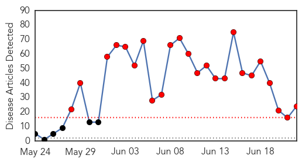

Meningitis
30-Day Web Trend
0 alerts, 0 warnings

30-Day Twitter Trend
0 alerts, 0 warnings

Article Locations

Article Confidences

Top Articles:
- 0.901
- Feds expected to recommend meningitis vaccine for teens
- 0.864
- Meningitis B Vaccine Offered to All Babies from September
- 0.835
- NHS to offer Meningitis B jab to babies September and teens from August
- 0.718
- Doctors Urging Chicago Gay Men To Get Meningitis Shot Amidst New Outbreak
- 0.687
- NATIONAL NEWS: Meningitis B vaccine for babies coming in September
- 0.648
- ‘Lifesaving’ Meningitis B vaccine on the way
- 0.636
- Meningitis victim's dad demands date for vaccine in Northern Ireland
- 0.615
- Scotland to introduce meningitis B vaccine into vaccination schedule
- 0.549
- Pfizer to acquire Nimenrix and Mencevax from GlaxoSmithKline
- 0.528
- Pfizer Enters Into Agreement To Acquire Nimenrix And Mencevax From GlaxoSmithKline - News Press Release
- 0.518
- Beefed up meningitis jab schedule for teens and babies in England
Top Tweets:
-
No tweets found for Jun 22, 2015
MERS
30-Day Web Trend
24 alerts, 0 warnings

30-Day Twitter Trend
19 alerts, 5 warnings

Article Locations

Article Confidences

Top Articles:
- 1.000
- Philippine News
- 1.000
- With MERS Outbreak Reaching Thailand, What Do Malaysians Have To Be Prepared For?
- 1.000
- MERS virus: Don't be paranoid, be wary, say experts- Nikkei Asian Review
- 0.999
- 12 Cases of MERS-CoV in the Republic of Korea are Reported to WHO
- 0.999
- MERS Update: Death toll; Will MERS come to Singapore?
- 0.999
- MERS Outbreak in South Korea Hits Record High, 3 New Cases, 2 More Die
- 0.998
- MERS-CoV: No cases so far but state remains on high alert for arrivals from South Korea, Middle East – BorneoPost Online
- 0.998
- Trickle of new cases lifts South Korea MERS total to 172
- 0.997
- Thailand And Malaysia Step Up Screening For MERS As South Korea Reports New Cases
- 0.996
- MERS Outbreak Worsens in South Korea
- 0.995
- Oman not in danger of MERS outbreak, says health ministry
- 0.993
- Planning for first clinical trial of MERS-CoV vaccine candidate now underway
- 0.990
- Lack of foresight on Mers
- 0.990
- South Korea reports two more deaths from Mers, three new cases
- 0.980
- Saudi Arabia cites 3 more MERS cases in Hofuf
- 0.971
- KBS World Radio
- 0.970
- MERS arrival in yet another country raises concerns about global preparedness
- 0.966
- Foreign Affairs Min asks embassies & consulates to update world on Thai MERS-CoV prevention
- 0.966
- MERS-CoV: Screening To Be Stepped At All Entry Points
- 0.953
- MERS patient in Thailand hospital, condition stable
- 0.909
- Headlines, News, The Philippine Star
- 0.887
- 7 coronavirus cases in Riyadh, Hofouf reported
- 0.848
- Defense, Health ministers ink cooperation agreement
- 0.833
- Ha Noi holds MERS-CoV emergency drill
Top Tweets:
- 0.675
- AFD blog `Korean MERS Cluster Rises To 172 Cases, 27 Deaths' MERS-CoV http://t.co/K21YQPdr9q
- 0.642
- RT: Acute Respiratory Infections in Travelers Returning from MERS-CoV–Affected Areas http://t.co/nGuAcPS9x9